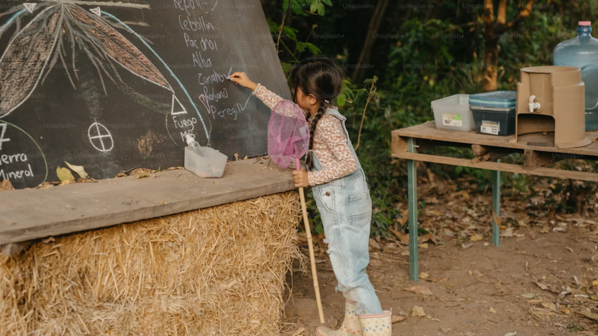

A educação rural é voltada para populações do campo, como agricultores, pescadores, ribeirinhos e quilombolas. Seu objetivo é promover o desenvolvimento respeitando os valores e a cultura local.
Muitas escolas rurais têm alcançado resultados expressivos. Por exemplo, a Escola Bernardo Sabino, no Piauí, se destacou no Ideb, provando a qualidade do ensino no campo.